Introduction to Data Analysis & Data Visualization
Statistical Programming using R
All the following code can be executed into R console, without any additional packages installation or data laoding, except when indicated.
Introduction to R language
Some useful things
Basic commands
1 + 2## [1] 3a = 1
a + 2## [1] 3c(1, 2)## [1] 1 2c(1, 2) + 3## [1] 4 51:5## [1] 1 2 3 4 5seq(1, 5)## [1] 1 2 3 4 5seq(1, 5, by = .5)## [1] 1.0 1.5 2.0 2.5 3.0 3.5 4.0 4.5 5.0seq(1, 5, length = 9)## [1] 1.0 1.5 2.0 2.5 3.0 3.5 4.0 4.5 5.0rep(1, 5)## [1] 1 1 1 1 1rep(c(1, 3), times = 5)## [1] 1 3 1 3 1 3 1 3 1 3rep(c(1, 3), each = 5)## [1] 1 1 1 1 1 3 3 3 3 3rep(c(1, 3), times = 2, each = 5)## [1] 1 1 1 1 1 3 3 3 3 3 1 1 1 1 1 3 3 3 3 3rep(c(1, 3), times = 2, each = 5, length = 11)## [1] 1 1 1 1 1 3 3 3 3 3 1ifelse(1 > 2, "sup", "inf")## [1] "inf"for(v in 1:5) print(v**2)## [1] 1
## [1] 4
## [1] 9
## [1] 16
## [1] 25sample(1:10)## [1] 4 3 5 1 9 6 10 2 8 7paste("good", "morning")## [1] "good morning"paste("good", "morning", sep = "-")## [1] "good-morning"paste0("good", "morning")## [1] "goodmorning"paste("good", c("morning", "afternoon"))## [1] "good morning" "good afternoon"Working directory
# this code is not executed
getwd()
setwd("path/to/your/working/directory")
getwd() # if no change, problem with previous linePackages
Packages directory
# this code is not executed
.libPaths()
.libPaths("path/to/your/packages/directory")
.libPaths() # if no change, problem with previous linePackage installation
# this code is not executed
install.packages("packagename") # one or more packages name
library(package) # without any quoteFunctions
f <- function(a, b) {
return(a ** b)
}
f(2, 5)## [1] 32f(a = 2, b = 5)## [1] 32f(a = 2, 5)## [1] 32f(b = 2, a = 5)## [1] 25f(b = 2, 5)## [1] 25f <- function(a, b = 1) {
return(a ** b)
}
f(2, 5)## [1] 32f(2)## [1] 2f <- function(a, b = 1, ...) {
s = sum(a, ...)
return(s ** b)
}
f(2, 5)## [1] 32f(c(1, 2, 3), 5)## [1] 7776f(c(1, NA, 3), 5)## [1] NAsum(c(1, NA, 3))## [1] NAsum(c(1, NA, 3), na.rm = TRUE)## [1] 4f(c(1, NA, 3), 5, na.rm = TRUE)## [1] 1024Import data from text files
We present here different files, with specific needs to correctly import data into R. We use the read.table() command, with options.
heart.txt
- Tabulated separated variables (default value)
- attriutes names in the first line (
header = T)
heart = read.table("donnees/heart.txt", header = T)
head(heart)## age sexe type_douleur pression cholester sucre electro taux_max
## 1 70 masculin D 130 322 A C 109
## 2 67 feminin C 115 564 A C 160
## 3 57 masculin B 124 261 A A 141
## 4 64 masculin D 128 263 A A 105
## 5 74 feminin B 120 269 A C 121
## 6 65 masculin D 120 177 A A 140
## angine depression pic vaisseau coeur
## 1 non 2.4 2 D presence
## 2 non 1.6 2 A absence
## 3 non 0.3 1 A presence
## 4 oui 0.2 2 B absence
## 5 oui 0.2 1 B absence
## 6 non 0.4 1 A absencehepatitis.TXT
- Tabulated separated variables
- attributes names in the first line (
header = T) - missing value indicated with
"?"(na.strings = "?")
hep = read.table("donnees/hepatitis.TXT", header = T, na.strings = "?")
head(hep)## AGE SEX STEROID ANTIVIRALS FATIGUE MALAISE ANOREXIA LIVER_BIG
## 1 30 male no no no no no no
## 2 50 female no no yes no no no
## 3 78 female yes no yes no no yes
## 4 31 female <NA> yes no no no yes
## 5 34 female yes no no no no yes
## 6 34 female yes no no no no yes
## LIVER_FIRM SPLEEN_PALPABLE SPIDERS ASCITES VARICES BILIRUBIN
## 1 no no no no no 1.0
## 2 no no no no no 0.9
## 3 no no no no no 0.7
## 4 no no no no no 0.7
## 5 no no no no no 1.0
## 6 no no no no no 0.9
## ALK_PHOSPHATE SGOT ALBUMIN PROTIME HISTOLOGY Class
## 1 85.00 18 4.0 61.85 no LIVE
## 2 135.00 42 3.5 61.85 no LIVE
## 3 96.00 32 4.0 61.85 no LIVE
## 4 46.00 52 4.0 80.00 no LIVE
## 5 105.33 200 4.0 61.85 no LIVE
## 6 95.00 28 4.0 75.00 no LIVEIris_bis.txx
- delimited variables with
"%"(sep = "%") - attributes names in the first line (
header = T) - specific decimal separator (
dec = ".")
ir = read.table("donnees/Iris_bis.txt", header = T, sep = "%", dec = ",")Detroit_homicide.txt
- attributes names in the first line (
header = T) - 35 first rows useless (
skip = 35)
dh = read.table("donnees/Detroit_homicide.txt", skip = 35, header = T)
head(dh)## FTP UEMP MAN LIC GR CLEAR WM NMAN GOV HE WE
## 1 260.35 11.0 455.5 178.15 215.98 93.4 558724 538.1 133.9 2.98 117.18
## 2 269.80 7.0 480.2 156.41 180.48 88.5 538584 547.6 137.6 3.09 134.02
## 3 272.04 5.2 506.1 198.02 209.57 94.4 519171 562.8 143.6 3.23 141.68
## 4 272.96 4.3 535.8 222.10 231.67 92.0 500457 591.0 150.3 3.33 147.98
## 5 272.51 3.5 576.0 301.92 297.65 91.0 482418 626.1 164.3 3.46 159.85
## 6 261.34 3.2 601.7 391.22 367.62 87.4 465029 659.8 179.5 3.60 157.19
## HOM ACC ASR
## 1 8.60 39.17 306.18
## 2 8.90 40.27 315.16
## 3 8.52 45.31 277.53
## 4 8.89 49.51 234.07
## 5 13.07 55.05 230.84
## 6 14.57 53.90 217.99Working with data.frame
About data.frame (basic manipulation)
head(iris)## Sepal.Length Sepal.Width Petal.Length Petal.Width Species
## 1 5.1 3.5 1.4 0.2 setosa
## 2 4.9 3.0 1.4 0.2 setosa
## 3 4.7 3.2 1.3 0.2 setosa
## 4 4.6 3.1 1.5 0.2 setosa
## 5 5.0 3.6 1.4 0.2 setosa
## 6 5.4 3.9 1.7 0.4 setosaclass(iris)## [1] "data.frame"names(iris)## [1] "Sepal.Length" "Sepal.Width" "Petal.Length" "Petal.Width"
## [5] "Species"dim(iris)## [1] 150 5nrow(iris)## [1] 150ncol(iris)## [1] 5str(iris)## 'data.frame': 150 obs. of 5 variables:
## $ Sepal.Length: num 5.1 4.9 4.7 4.6 5 5.4 4.6 5 4.4 4.9 ...
## $ Sepal.Width : num 3.5 3 3.2 3.1 3.6 3.9 3.4 3.4 2.9 3.1 ...
## $ Petal.Length: num 1.4 1.4 1.3 1.5 1.4 1.7 1.4 1.5 1.4 1.5 ...
## $ Petal.Width : num 0.2 0.2 0.2 0.2 0.2 0.4 0.3 0.2 0.2 0.1 ...
## $ Species : Factor w/ 3 levels "setosa","versicolor",..: 1 1 1 1 1 1 1 1 1 1 ...For illustration, we extract 20 random rows from iris.
iris = head(iris[sample(seq(nrow(iris))),], 20)Get one column from a data.frame
iris$Sepal.Length## [1] 5.0 7.9 4.5 6.6 6.4 6.2 4.7 6.4 5.8 6.7 6.6 5.1 6.4 7.1 4.9 5.1 6.3
## [18] 7.7 6.3 5.5iris[,1]## [1] 5.0 7.9 4.5 6.6 6.4 6.2 4.7 6.4 5.8 6.7 6.6 5.1 6.4 7.1 4.9 5.1 6.3
## [18] 7.7 6.3 5.5iris[,"Sepal.Length"]## [1] 5.0 7.9 4.5 6.6 6.4 6.2 4.7 6.4 5.8 6.7 6.6 5.1 6.4 7.1 4.9 5.1 6.3
## [18] 7.7 6.3 5.5iris[1]## Sepal.Length
## 94 5.0
## 132 7.9
## 42 4.5
## 59 6.6
## 112 6.4
## 98 6.2
## 30 4.7
## 52 6.4
## 143 5.8
## 145 6.7
## 76 6.6
## 99 5.1
## 75 6.4
## 103 7.1
## 58 4.9
## 24 5.1
## 104 6.3
## 118 7.7
## 73 6.3
## 37 5.5iris["Sepal.Length"]## Sepal.Length
## 94 5.0
## 132 7.9
## 42 4.5
## 59 6.6
## 112 6.4
## 98 6.2
## 30 4.7
## 52 6.4
## 143 5.8
## 145 6.7
## 76 6.6
## 99 5.1
## 75 6.4
## 103 7.1
## 58 4.9
## 24 5.1
## 104 6.3
## 118 7.7
## 73 6.3
## 37 5.5Get more than one column
iris[,c(1,3)]## Sepal.Length Petal.Length
## 94 5.0 3.3
## 132 7.9 6.4
## 42 4.5 1.3
## 59 6.6 4.6
## 112 6.4 5.3
## 98 6.2 4.3
## 30 4.7 1.6
## 52 6.4 4.5
## 143 5.8 5.1
## 145 6.7 5.7
## 76 6.6 4.4
## 99 5.1 3.0
## 75 6.4 4.3
## 103 7.1 5.9
## 58 4.9 3.3
## 24 5.1 1.7
## 104 6.3 5.6
## 118 7.7 6.7
## 73 6.3 4.9
## 37 5.5 1.3iris[,c("Sepal.Length", "Petal.Length")]## Sepal.Length Petal.Length
## 94 5.0 3.3
## 132 7.9 6.4
## 42 4.5 1.3
## 59 6.6 4.6
## 112 6.4 5.3
## 98 6.2 4.3
## 30 4.7 1.6
## 52 6.4 4.5
## 143 5.8 5.1
## 145 6.7 5.7
## 76 6.6 4.4
## 99 5.1 3.0
## 75 6.4 4.3
## 103 7.1 5.9
## 58 4.9 3.3
## 24 5.1 1.7
## 104 6.3 5.6
## 118 7.7 6.7
## 73 6.3 4.9
## 37 5.5 1.3iris[c(1,3)]## Sepal.Length Petal.Length
## 94 5.0 3.3
## 132 7.9 6.4
## 42 4.5 1.3
## 59 6.6 4.6
## 112 6.4 5.3
## 98 6.2 4.3
## 30 4.7 1.6
## 52 6.4 4.5
## 143 5.8 5.1
## 145 6.7 5.7
## 76 6.6 4.4
## 99 5.1 3.0
## 75 6.4 4.3
## 103 7.1 5.9
## 58 4.9 3.3
## 24 5.1 1.7
## 104 6.3 5.6
## 118 7.7 6.7
## 73 6.3 4.9
## 37 5.5 1.3iris[c("Sepal.Length", "Petal.Length")]## Sepal.Length Petal.Length
## 94 5.0 3.3
## 132 7.9 6.4
## 42 4.5 1.3
## 59 6.6 4.6
## 112 6.4 5.3
## 98 6.2 4.3
## 30 4.7 1.6
## 52 6.4 4.5
## 143 5.8 5.1
## 145 6.7 5.7
## 76 6.6 4.4
## 99 5.1 3.0
## 75 6.4 4.3
## 103 7.1 5.9
## 58 4.9 3.3
## 24 5.1 1.7
## 104 6.3 5.6
## 118 7.7 6.7
## 73 6.3 4.9
## 37 5.5 1.3iris[-c(2, 4, 5)]## Sepal.Length Petal.Length
## 94 5.0 3.3
## 132 7.9 6.4
## 42 4.5 1.3
## 59 6.6 4.6
## 112 6.4 5.3
## 98 6.2 4.3
## 30 4.7 1.6
## 52 6.4 4.5
## 143 5.8 5.1
## 145 6.7 5.7
## 76 6.6 4.4
## 99 5.1 3.0
## 75 6.4 4.3
## 103 7.1 5.9
## 58 4.9 3.3
## 24 5.1 1.7
## 104 6.3 5.6
## 118 7.7 6.7
## 73 6.3 4.9
## 37 5.5 1.3Get one row from a data.frame
iris[1,]## Sepal.Length Sepal.Width Petal.Length Petal.Width Species
## 94 5 2.3 3.3 1 versicoloriris[c(1,3),]## Sepal.Length Sepal.Width Petal.Length Petal.Width Species
## 94 5.0 2.3 3.3 1.0 versicolor
## 42 4.5 2.3 1.3 0.3 setosairis[iris$Sepal.Length > 6,]## Sepal.Length Sepal.Width Petal.Length Petal.Width Species
## 132 7.9 3.8 6.4 2.0 virginica
## 59 6.6 2.9 4.6 1.3 versicolor
## 112 6.4 2.7 5.3 1.9 virginica
## 98 6.2 2.9 4.3 1.3 versicolor
## 52 6.4 3.2 4.5 1.5 versicolor
## 145 6.7 3.3 5.7 2.5 virginica
## 76 6.6 3.0 4.4 1.4 versicolor
## 75 6.4 2.9 4.3 1.3 versicolor
## 103 7.1 3.0 5.9 2.1 virginica
## 104 6.3 2.9 5.6 1.8 virginica
## 118 7.7 3.8 6.7 2.2 virginica
## 73 6.3 2.5 4.9 1.5 versicolorData types
class(names(iris))## [1] "character"class(iris$Sepal.Length)## [1] "numeric"class(iris$Species)## [1] "factor"head(iris$Species)## [1] versicolor virginica setosa versicolor virginica versicolor
## Levels: setosa versicolor virginicaGroup two data.frame together
cbind(iris[,1], iris[,4:5])## iris[, 1] Petal.Width Species
## 94 5.0 1.0 versicolor
## 132 7.9 2.0 virginica
## 42 4.5 0.3 setosa
## 59 6.6 1.3 versicolor
## 112 6.4 1.9 virginica
## 98 6.2 1.3 versicolor
## 30 4.7 0.2 setosa
## 52 6.4 1.5 versicolor
## 143 5.8 1.9 virginica
## 145 6.7 2.5 virginica
## 76 6.6 1.4 versicolor
## 99 5.1 1.1 versicolor
## 75 6.4 1.3 versicolor
## 103 7.1 2.1 virginica
## 58 4.9 1.0 versicolor
## 24 5.1 0.5 setosa
## 104 6.3 1.8 virginica
## 118 7.7 2.2 virginica
## 73 6.3 1.5 versicolor
## 37 5.5 0.2 setosarbind(iris[1:3,], iris[8:10,])## Sepal.Length Sepal.Width Petal.Length Petal.Width Species
## 94 5.0 2.3 3.3 1.0 versicolor
## 132 7.9 3.8 6.4 2.0 virginica
## 42 4.5 2.3 1.3 0.3 setosa
## 52 6.4 3.2 4.5 1.5 versicolor
## 143 5.8 2.7 5.1 1.9 virginica
## 145 6.7 3.3 5.7 2.5 virginicaUnivariate statistics
We now work on the complete iris dataset.
Quantitative
Numerical statistics
mean(iris$Sepal.Length)## [1] 5.843333sd(iris$Sepal.Length)## [1] 0.8280661var(iris$Sepal.Length)## [1] 0.6856935median(iris$Sepal.Length)## [1] 5.8min(iris$Sepal.Length)## [1] 4.3max(iris$Sepal.Length)## [1] 7.9range(iris$Sepal.Length)## [1] 4.3 7.9quantile(iris$Sepal.Length)## 0% 25% 50% 75% 100%
## 4.3 5.1 5.8 6.4 7.9quantile(iris$Sepal.Length, .1)## 10%
## 4.8quantile(iris$Sepal.Length, c(.01, .1, .9, .99))## 1% 10% 90% 99%
## 4.4 4.8 6.9 7.7summary(iris$Sepal.Length)## Min. 1st Qu. Median Mean 3rd Qu. Max.
## 4.300 5.100 5.800 5.843 6.400 7.900shapiro.test(iris$Sepal.Length)##
## Shapiro-Wilk normality test
##
## data: iris$Sepal.Length
## W = 0.97609, p-value = 0.01018Basic graphics
hist(iris$Sepal.Length)
boxplot(iris$Sepal.Length)
qqnorm(iris$Sepal.Length)
qqline(iris$Sepal.Length)
plot(ecdf(iris$Sepal.Length))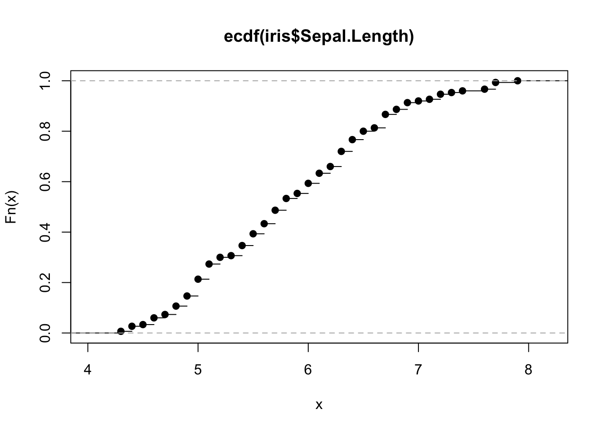
Qualitative
factor
Numerical statistics
t = table(iris$Species)
prop.table(t)##
## setosa versicolor virginica
## 0.3333333 0.3333333 0.3333333chisq.test(t)##
## Chi-squared test for given probabilities
##
## data: t
## X-squared = 0, df = 2, p-value = 1chisq.test(t, p = c(.2, .3, .5))##
## Chi-squared test for given probabilities
##
## data: t
## X-squared = 22.222, df = 2, p-value = 1.495e-05Basic graphics
barplot(table(iris$Species))
plot(iris$Species) # work only because Species is declared as factor
pie(table(iris$Species))
Bivariate statistics
Two quantitatives
Numerical
cov(iris$Sepal.Length, iris$Sepal.Width)## [1] -0.042434cor(iris$Sepal.Length, iris$Sepal.Width)## [1] -0.1175698cor.test(iris$Sepal.Length, iris$Sepal.Width)##
## Pearson's product-moment correlation
##
## data: iris$Sepal.Length and iris$Sepal.Width
## t = -1.4403, df = 148, p-value = 0.1519
## alternative hypothesis: true correlation is not equal to 0
## 95 percent confidence interval:
## -0.27269325 0.04351158
## sample estimates:
## cor
## -0.1175698m = lm(Sepal.Length ~ Sepal.Width, data = iris)
m##
## Call:
## lm(formula = Sepal.Length ~ Sepal.Width, data = iris)
##
## Coefficients:
## (Intercept) Sepal.Width
## 6.5262 -0.2234summary(m)##
## Call:
## lm(formula = Sepal.Length ~ Sepal.Width, data = iris)
##
## Residuals:
## Min 1Q Median 3Q Max
## -1.5561 -0.6333 -0.1120 0.5579 2.2226
##
## Coefficients:
## Estimate Std. Error t value Pr(>|t|)
## (Intercept) 6.5262 0.4789 13.63 <2e-16 ***
## Sepal.Width -0.2234 0.1551 -1.44 0.152
## ---
## Signif. codes: 0 '***' 0.001 '**' 0.01 '*' 0.05 '.' 0.1 ' ' 1
##
## Residual standard error: 0.8251 on 148 degrees of freedom
## Multiple R-squared: 0.01382, Adjusted R-squared: 0.007159
## F-statistic: 2.074 on 1 and 148 DF, p-value: 0.1519Graphics
plot(iris$Sepal.Length, iris$Sepal.Width)
plot(iris$Sepal.Length ~ iris$Sepal.Width)
plot(Sepal.Length ~ Sepal.Width, data = iris)
abline(m, col = "red")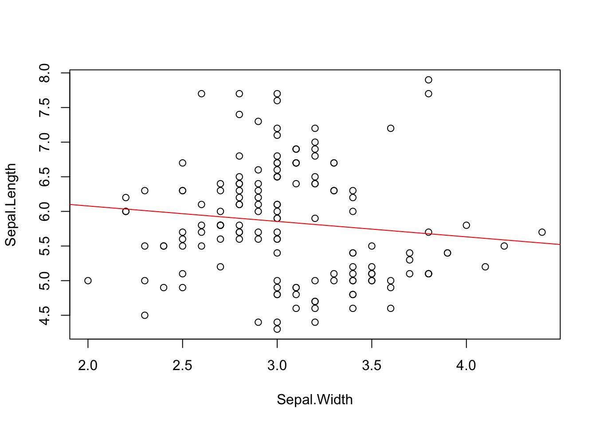
Two qualitatives
Create a new ordinal attribute from Sepal.Length, with 5 values for instance.
iris$Sepal.Length.ord = cut(iris$Sepal.Length, 5)
table(iris$Sepal.Length.ord)##
## (4.3,5.02] (5.02,5.74] (5.74,6.46] (6.46,7.18] (7.18,7.9]
## 32 41 42 24 11diff(range(iris$Sepal.Length)) / 5## [1] 0.72Numerical statistics
t = table(iris$Species, iris$Sepal.Length.ord)
t##
## (4.3,5.02] (5.02,5.74] (5.74,6.46] (6.46,7.18] (7.18,7.9]
## setosa 28 21 1 0 0
## versicolor 3 18 20 9 0
## virginica 1 2 21 15 11prop.table(t)##
## (4.3,5.02] (5.02,5.74] (5.74,6.46] (6.46,7.18] (7.18,7.9]
## setosa 0.186666667 0.140000000 0.006666667 0.000000000 0.000000000
## versicolor 0.020000000 0.120000000 0.133333333 0.060000000 0.000000000
## virginica 0.006666667 0.013333333 0.140000000 0.100000000 0.073333333prop.table(t, margin = 1)##
## (4.3,5.02] (5.02,5.74] (5.74,6.46] (6.46,7.18] (7.18,7.9]
## setosa 0.56 0.42 0.02 0.00 0.00
## versicolor 0.06 0.36 0.40 0.18 0.00
## virginica 0.02 0.04 0.42 0.30 0.22prop.table(t, margin = 2)##
## (4.3,5.02] (5.02,5.74] (5.74,6.46] (6.46,7.18] (7.18,7.9]
## setosa 0.87500000 0.51219512 0.02380952 0.00000000 0.00000000
## versicolor 0.09375000 0.43902439 0.47619048 0.37500000 0.00000000
## virginica 0.03125000 0.04878049 0.50000000 0.62500000 1.00000000chisq.test(t)## Warning in chisq.test(t): Chi-squared approximation may be incorrect##
## Pearson's Chi-squared test
##
## data: t
## X-squared = 112.1, df = 8, p-value < 2.2e-16Graphics
barplot(t)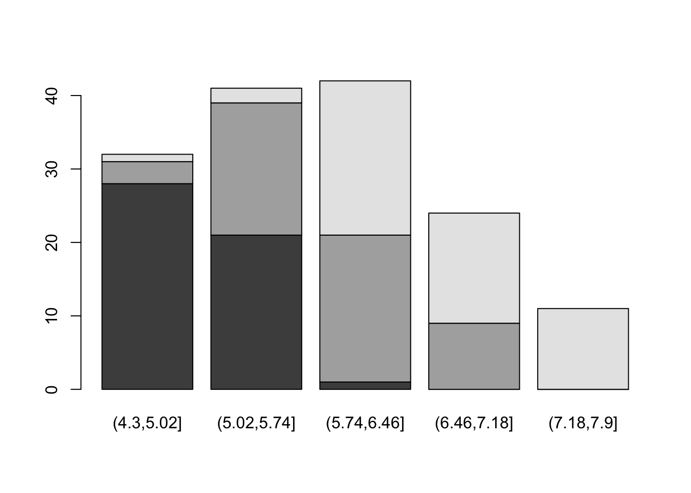
barplot(t, beside = TRUE)
barplot(prop.table(t, margin = 2))
assocplot(t)
mosaicplot(t)
One quantitative vs. one qualitative
Numerical statistics
tapply(iris$Sepal.Length, iris$Species, mean)## setosa versicolor virginica
## 5.006 5.936 6.588tapply(iris$Sepal.Length, iris$Species, summary)## $setosa
## Min. 1st Qu. Median Mean 3rd Qu. Max.
## 4.300 4.800 5.000 5.006 5.200 5.800
##
## $versicolor
## Min. 1st Qu. Median Mean 3rd Qu. Max.
## 4.900 5.600 5.900 5.936 6.300 7.000
##
## $virginica
## Min. 1st Qu. Median Mean 3rd Qu. Max.
## 4.900 6.225 6.500 6.588 6.900 7.900anova(lm(Sepal.Length ~ Species, data = iris))## Analysis of Variance Table
##
## Response: Sepal.Length
## Df Sum Sq Mean Sq F value Pr(>F)
## Species 2 63.212 31.606 119.26 < 2.2e-16 ***
## Residuals 147 38.956 0.265
## ---
## Signif. codes: 0 '***' 0.001 '**' 0.01 '*' 0.05 '.' 0.1 ' ' 1m = aov(Sepal.Length ~ Species, data = iris)
m## Call:
## aov(formula = Sepal.Length ~ Species, data = iris)
##
## Terms:
## Species Residuals
## Sum of Squares 63.21213 38.95620
## Deg. of Freedom 2 147
##
## Residual standard error: 0.5147894
## Estimated effects may be unbalancedsummary(m)## Df Sum Sq Mean Sq F value Pr(>F)
## Species 2 63.21 31.606 119.3 <2e-16 ***
## Residuals 147 38.96 0.265
## ---
## Signif. codes: 0 '***' 0.001 '**' 0.01 '*' 0.05 '.' 0.1 ' ' 1Graphics
boxplot(Sepal.Length ~ Species, data = iris)
par(mfrow = c(3, 1), mar = c(2, 2, 0, 0) + .1)
x = iris$Sepal.Length
for (v in levels(iris$Species)) {
hist(x[iris$Species == v],
freq = FALSE,
xlim = range(x),
breaks = seq(min(x), max(x), length = 10),
main = NULL)
}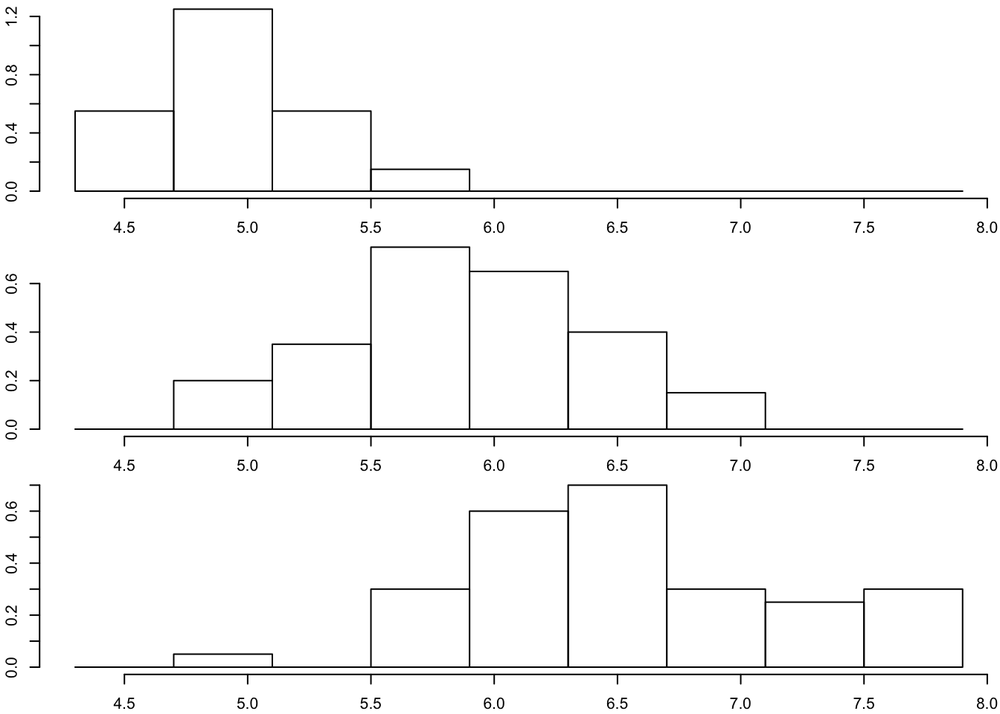
Multivariate statistics (basic)
on data.frame
summary(iris)## Sepal.Length Sepal.Width Petal.Length Petal.Width
## Min. :4.300 Min. :2.000 Min. :1.000 Min. :0.100
## 1st Qu.:5.100 1st Qu.:2.800 1st Qu.:1.600 1st Qu.:0.300
## Median :5.800 Median :3.000 Median :4.350 Median :1.300
## Mean :5.843 Mean :3.057 Mean :3.758 Mean :1.199
## 3rd Qu.:6.400 3rd Qu.:3.300 3rd Qu.:5.100 3rd Qu.:1.800
## Max. :7.900 Max. :4.400 Max. :6.900 Max. :2.500
## Species Sepal.Length.ord
## setosa :50 (4.3,5.02] :32
## versicolor:50 (5.02,5.74]:41
## virginica :50 (5.74,6.46]:42
## (6.46,7.18]:24
## (7.18,7.9] :11
## apply(iris[1:4], 2, mean)## Sepal.Length Sepal.Width Petal.Length Petal.Width
## 5.843333 3.057333 3.758000 1.199333apply(iris[1:4], 2, summary)## Sepal.Length Sepal.Width Petal.Length Petal.Width
## Min. 4.300 2.000 1.000 0.100
## 1st Qu. 5.100 2.800 1.600 0.300
## Median 5.800 3.000 4.350 1.300
## Mean 5.843 3.057 3.758 1.199
## 3rd Qu. 6.400 3.300 5.100 1.800
## Max. 7.900 4.400 6.900 2.500apply(iris[1:4], 2, tapply, iris$Species, mean)## Sepal.Length Sepal.Width Petal.Length Petal.Width
## setosa 5.006 3.428 1.462 0.246
## versicolor 5.936 2.770 4.260 1.326
## virginica 6.588 2.974 5.552 2.026cor(iris[1:4])## Sepal.Length Sepal.Width Petal.Length Petal.Width
## Sepal.Length 1.0000000 -0.1175698 0.8717538 0.8179411
## Sepal.Width -0.1175698 1.0000000 -0.4284401 -0.3661259
## Petal.Length 0.8717538 -0.4284401 1.0000000 0.9628654
## Petal.Width 0.8179411 -0.3661259 0.9628654 1.0000000plot(Sepal.Length ~ Sepal.Width, data = iris,
col = rainbow(3)[iris$Species], pch = 19)
legend("topright",
pch = 19, col = rainbow(3),
legend = levels(iris$Species))
pairs(iris[-5])
pairs(iris[-5], col = rainbow(3)[iris$Species], pch = 19, upper.panel = NULL)
Advanced manipulation, using basic R code
subset()
subset(iris, subset = Species == "setosa")## Sepal.Length Sepal.Width Petal.Length Petal.Width Species
## 1 5.1 3.5 1.4 0.2 setosa
## 2 4.9 3.0 1.4 0.2 setosa
## 3 4.7 3.2 1.3 0.2 setosa
## 4 4.6 3.1 1.5 0.2 setosa
## 5 5.0 3.6 1.4 0.2 setosa
## 6 5.4 3.9 1.7 0.4 setosa
## 7 4.6 3.4 1.4 0.3 setosa
## 8 5.0 3.4 1.5 0.2 setosa
## 9 4.4 2.9 1.4 0.2 setosa
## 10 4.9 3.1 1.5 0.1 setosa
## 11 5.4 3.7 1.5 0.2 setosa
## 12 4.8 3.4 1.6 0.2 setosa
## 13 4.8 3.0 1.4 0.1 setosa
## 14 4.3 3.0 1.1 0.1 setosa
## 15 5.8 4.0 1.2 0.2 setosa
## 16 5.7 4.4 1.5 0.4 setosa
## 17 5.4 3.9 1.3 0.4 setosa
## 18 5.1 3.5 1.4 0.3 setosa
## 19 5.7 3.8 1.7 0.3 setosa
## 20 5.1 3.8 1.5 0.3 setosa
## 21 5.4 3.4 1.7 0.2 setosa
## 22 5.1 3.7 1.5 0.4 setosa
## 23 4.6 3.6 1.0 0.2 setosa
## 24 5.1 3.3 1.7 0.5 setosa
## 25 4.8 3.4 1.9 0.2 setosa
## 26 5.0 3.0 1.6 0.2 setosa
## 27 5.0 3.4 1.6 0.4 setosa
## 28 5.2 3.5 1.5 0.2 setosa
## 29 5.2 3.4 1.4 0.2 setosa
## 30 4.7 3.2 1.6 0.2 setosa
## 31 4.8 3.1 1.6 0.2 setosa
## 32 5.4 3.4 1.5 0.4 setosa
## 33 5.2 4.1 1.5 0.1 setosa
## 34 5.5 4.2 1.4 0.2 setosa
## 35 4.9 3.1 1.5 0.2 setosa
## 36 5.0 3.2 1.2 0.2 setosa
## 37 5.5 3.5 1.3 0.2 setosa
## 38 4.9 3.6 1.4 0.1 setosa
## 39 4.4 3.0 1.3 0.2 setosa
## 40 5.1 3.4 1.5 0.2 setosa
## 41 5.0 3.5 1.3 0.3 setosa
## 42 4.5 2.3 1.3 0.3 setosa
## 43 4.4 3.2 1.3 0.2 setosa
## 44 5.0 3.5 1.6 0.6 setosa
## 45 5.1 3.8 1.9 0.4 setosa
## 46 4.8 3.0 1.4 0.3 setosa
## 47 5.1 3.8 1.6 0.2 setosa
## 48 4.6 3.2 1.4 0.2 setosa
## 49 5.3 3.7 1.5 0.2 setosa
## 50 5.0 3.3 1.4 0.2 setosa
## Sepal.Length.ord
## 1 (5.02,5.74]
## 2 (4.3,5.02]
## 3 (4.3,5.02]
## 4 (4.3,5.02]
## 5 (4.3,5.02]
## 6 (5.02,5.74]
## 7 (4.3,5.02]
## 8 (4.3,5.02]
## 9 (4.3,5.02]
## 10 (4.3,5.02]
## 11 (5.02,5.74]
## 12 (4.3,5.02]
## 13 (4.3,5.02]
## 14 (4.3,5.02]
## 15 (5.74,6.46]
## 16 (5.02,5.74]
## 17 (5.02,5.74]
## 18 (5.02,5.74]
## 19 (5.02,5.74]
## 20 (5.02,5.74]
## 21 (5.02,5.74]
## 22 (5.02,5.74]
## 23 (4.3,5.02]
## 24 (5.02,5.74]
## 25 (4.3,5.02]
## 26 (4.3,5.02]
## 27 (4.3,5.02]
## 28 (5.02,5.74]
## 29 (5.02,5.74]
## 30 (4.3,5.02]
## 31 (4.3,5.02]
## 32 (5.02,5.74]
## 33 (5.02,5.74]
## 34 (5.02,5.74]
## 35 (4.3,5.02]
## 36 (4.3,5.02]
## 37 (5.02,5.74]
## 38 (4.3,5.02]
## 39 (4.3,5.02]
## 40 (5.02,5.74]
## 41 (4.3,5.02]
## 42 (4.3,5.02]
## 43 (4.3,5.02]
## 44 (4.3,5.02]
## 45 (5.02,5.74]
## 46 (4.3,5.02]
## 47 (5.02,5.74]
## 48 (4.3,5.02]
## 49 (5.02,5.74]
## 50 (4.3,5.02]subset(iris, subset = Species == "setosa" & Sepal.Length > 5.5)## Sepal.Length Sepal.Width Petal.Length Petal.Width Species
## 15 5.8 4.0 1.2 0.2 setosa
## 16 5.7 4.4 1.5 0.4 setosa
## 19 5.7 3.8 1.7 0.3 setosa
## Sepal.Length.ord
## 15 (5.74,6.46]
## 16 (5.02,5.74]
## 19 (5.02,5.74]subset(iris, select = c(Sepal.Length, Species))## Sepal.Length Species
## 1 5.1 setosa
## 2 4.9 setosa
## 3 4.7 setosa
## 4 4.6 setosa
## 5 5.0 setosa
## 6 5.4 setosa
## 7 4.6 setosa
## 8 5.0 setosa
## 9 4.4 setosa
## 10 4.9 setosa
## 11 5.4 setosa
## 12 4.8 setosa
## 13 4.8 setosa
## 14 4.3 setosa
## 15 5.8 setosa
## 16 5.7 setosa
## 17 5.4 setosa
## 18 5.1 setosa
## 19 5.7 setosa
## 20 5.1 setosa
## 21 5.4 setosa
## 22 5.1 setosa
## 23 4.6 setosa
## 24 5.1 setosa
## 25 4.8 setosa
## 26 5.0 setosa
## 27 5.0 setosa
## 28 5.2 setosa
## 29 5.2 setosa
## 30 4.7 setosa
## 31 4.8 setosa
## 32 5.4 setosa
## 33 5.2 setosa
## 34 5.5 setosa
## 35 4.9 setosa
## 36 5.0 setosa
## 37 5.5 setosa
## 38 4.9 setosa
## 39 4.4 setosa
## 40 5.1 setosa
## 41 5.0 setosa
## 42 4.5 setosa
## 43 4.4 setosa
## 44 5.0 setosa
## 45 5.1 setosa
## 46 4.8 setosa
## 47 5.1 setosa
## 48 4.6 setosa
## 49 5.3 setosa
## 50 5.0 setosa
## 51 7.0 versicolor
## 52 6.4 versicolor
## 53 6.9 versicolor
## 54 5.5 versicolor
## 55 6.5 versicolor
## 56 5.7 versicolor
## 57 6.3 versicolor
## 58 4.9 versicolor
## 59 6.6 versicolor
## 60 5.2 versicolor
## 61 5.0 versicolor
## 62 5.9 versicolor
## 63 6.0 versicolor
## 64 6.1 versicolor
## 65 5.6 versicolor
## 66 6.7 versicolor
## 67 5.6 versicolor
## 68 5.8 versicolor
## 69 6.2 versicolor
## 70 5.6 versicolor
## 71 5.9 versicolor
## 72 6.1 versicolor
## 73 6.3 versicolor
## 74 6.1 versicolor
## 75 6.4 versicolor
## 76 6.6 versicolor
## 77 6.8 versicolor
## 78 6.7 versicolor
## 79 6.0 versicolor
## 80 5.7 versicolor
## 81 5.5 versicolor
## 82 5.5 versicolor
## 83 5.8 versicolor
## 84 6.0 versicolor
## 85 5.4 versicolor
## 86 6.0 versicolor
## 87 6.7 versicolor
## 88 6.3 versicolor
## 89 5.6 versicolor
## 90 5.5 versicolor
## 91 5.5 versicolor
## 92 6.1 versicolor
## 93 5.8 versicolor
## 94 5.0 versicolor
## 95 5.6 versicolor
## 96 5.7 versicolor
## 97 5.7 versicolor
## 98 6.2 versicolor
## 99 5.1 versicolor
## 100 5.7 versicolor
## 101 6.3 virginica
## 102 5.8 virginica
## 103 7.1 virginica
## 104 6.3 virginica
## 105 6.5 virginica
## 106 7.6 virginica
## 107 4.9 virginica
## 108 7.3 virginica
## 109 6.7 virginica
## 110 7.2 virginica
## 111 6.5 virginica
## 112 6.4 virginica
## 113 6.8 virginica
## 114 5.7 virginica
## 115 5.8 virginica
## 116 6.4 virginica
## 117 6.5 virginica
## 118 7.7 virginica
## 119 7.7 virginica
## 120 6.0 virginica
## 121 6.9 virginica
## 122 5.6 virginica
## 123 7.7 virginica
## 124 6.3 virginica
## 125 6.7 virginica
## 126 7.2 virginica
## 127 6.2 virginica
## 128 6.1 virginica
## 129 6.4 virginica
## 130 7.2 virginica
## 131 7.4 virginica
## 132 7.9 virginica
## 133 6.4 virginica
## 134 6.3 virginica
## 135 6.1 virginica
## 136 7.7 virginica
## 137 6.3 virginica
## 138 6.4 virginica
## 139 6.0 virginica
## 140 6.9 virginica
## 141 6.7 virginica
## 142 6.9 virginica
## 143 5.8 virginica
## 144 6.8 virginica
## 145 6.7 virginica
## 146 6.7 virginica
## 147 6.3 virginica
## 148 6.5 virginica
## 149 6.2 virginica
## 150 5.9 virginicasubset(iris,
subset = Species == "setosa" & Sepal.Length > 5.5,
select = c(Sepal.Length, Species))## Sepal.Length Species
## 15 5.8 setosa
## 16 5.7 setosa
## 19 5.7 setosatransform()
transform(iris, Sepal.Length.ord = cut(Sepal.Length, 5))## Sepal.Length Sepal.Width Petal.Length Petal.Width Species
## 1 5.1 3.5 1.4 0.2 setosa
## 2 4.9 3.0 1.4 0.2 setosa
## 3 4.7 3.2 1.3 0.2 setosa
## 4 4.6 3.1 1.5 0.2 setosa
## 5 5.0 3.6 1.4 0.2 setosa
## 6 5.4 3.9 1.7 0.4 setosa
## 7 4.6 3.4 1.4 0.3 setosa
## 8 5.0 3.4 1.5 0.2 setosa
## 9 4.4 2.9 1.4 0.2 setosa
## 10 4.9 3.1 1.5 0.1 setosa
## 11 5.4 3.7 1.5 0.2 setosa
## 12 4.8 3.4 1.6 0.2 setosa
## 13 4.8 3.0 1.4 0.1 setosa
## 14 4.3 3.0 1.1 0.1 setosa
## 15 5.8 4.0 1.2 0.2 setosa
## 16 5.7 4.4 1.5 0.4 setosa
## 17 5.4 3.9 1.3 0.4 setosa
## 18 5.1 3.5 1.4 0.3 setosa
## 19 5.7 3.8 1.7 0.3 setosa
## 20 5.1 3.8 1.5 0.3 setosa
## 21 5.4 3.4 1.7 0.2 setosa
## 22 5.1 3.7 1.5 0.4 setosa
## 23 4.6 3.6 1.0 0.2 setosa
## 24 5.1 3.3 1.7 0.5 setosa
## 25 4.8 3.4 1.9 0.2 setosa
## 26 5.0 3.0 1.6 0.2 setosa
## 27 5.0 3.4 1.6 0.4 setosa
## 28 5.2 3.5 1.5 0.2 setosa
## 29 5.2 3.4 1.4 0.2 setosa
## 30 4.7 3.2 1.6 0.2 setosa
## 31 4.8 3.1 1.6 0.2 setosa
## 32 5.4 3.4 1.5 0.4 setosa
## 33 5.2 4.1 1.5 0.1 setosa
## 34 5.5 4.2 1.4 0.2 setosa
## 35 4.9 3.1 1.5 0.2 setosa
## 36 5.0 3.2 1.2 0.2 setosa
## 37 5.5 3.5 1.3 0.2 setosa
## 38 4.9 3.6 1.4 0.1 setosa
## 39 4.4 3.0 1.3 0.2 setosa
## 40 5.1 3.4 1.5 0.2 setosa
## 41 5.0 3.5 1.3 0.3 setosa
## 42 4.5 2.3 1.3 0.3 setosa
## 43 4.4 3.2 1.3 0.2 setosa
## 44 5.0 3.5 1.6 0.6 setosa
## 45 5.1 3.8 1.9 0.4 setosa
## 46 4.8 3.0 1.4 0.3 setosa
## 47 5.1 3.8 1.6 0.2 setosa
## 48 4.6 3.2 1.4 0.2 setosa
## 49 5.3 3.7 1.5 0.2 setosa
## 50 5.0 3.3 1.4 0.2 setosa
## 51 7.0 3.2 4.7 1.4 versicolor
## 52 6.4 3.2 4.5 1.5 versicolor
## 53 6.9 3.1 4.9 1.5 versicolor
## 54 5.5 2.3 4.0 1.3 versicolor
## 55 6.5 2.8 4.6 1.5 versicolor
## 56 5.7 2.8 4.5 1.3 versicolor
## 57 6.3 3.3 4.7 1.6 versicolor
## 58 4.9 2.4 3.3 1.0 versicolor
## 59 6.6 2.9 4.6 1.3 versicolor
## 60 5.2 2.7 3.9 1.4 versicolor
## 61 5.0 2.0 3.5 1.0 versicolor
## 62 5.9 3.0 4.2 1.5 versicolor
## 63 6.0 2.2 4.0 1.0 versicolor
## 64 6.1 2.9 4.7 1.4 versicolor
## 65 5.6 2.9 3.6 1.3 versicolor
## 66 6.7 3.1 4.4 1.4 versicolor
## 67 5.6 3.0 4.5 1.5 versicolor
## 68 5.8 2.7 4.1 1.0 versicolor
## 69 6.2 2.2 4.5 1.5 versicolor
## 70 5.6 2.5 3.9 1.1 versicolor
## 71 5.9 3.2 4.8 1.8 versicolor
## 72 6.1 2.8 4.0 1.3 versicolor
## 73 6.3 2.5 4.9 1.5 versicolor
## 74 6.1 2.8 4.7 1.2 versicolor
## 75 6.4 2.9 4.3 1.3 versicolor
## 76 6.6 3.0 4.4 1.4 versicolor
## 77 6.8 2.8 4.8 1.4 versicolor
## 78 6.7 3.0 5.0 1.7 versicolor
## 79 6.0 2.9 4.5 1.5 versicolor
## 80 5.7 2.6 3.5 1.0 versicolor
## 81 5.5 2.4 3.8 1.1 versicolor
## 82 5.5 2.4 3.7 1.0 versicolor
## 83 5.8 2.7 3.9 1.2 versicolor
## 84 6.0 2.7 5.1 1.6 versicolor
## 85 5.4 3.0 4.5 1.5 versicolor
## 86 6.0 3.4 4.5 1.6 versicolor
## 87 6.7 3.1 4.7 1.5 versicolor
## 88 6.3 2.3 4.4 1.3 versicolor
## 89 5.6 3.0 4.1 1.3 versicolor
## 90 5.5 2.5 4.0 1.3 versicolor
## 91 5.5 2.6 4.4 1.2 versicolor
## 92 6.1 3.0 4.6 1.4 versicolor
## 93 5.8 2.6 4.0 1.2 versicolor
## 94 5.0 2.3 3.3 1.0 versicolor
## 95 5.6 2.7 4.2 1.3 versicolor
## 96 5.7 3.0 4.2 1.2 versicolor
## 97 5.7 2.9 4.2 1.3 versicolor
## 98 6.2 2.9 4.3 1.3 versicolor
## 99 5.1 2.5 3.0 1.1 versicolor
## 100 5.7 2.8 4.1 1.3 versicolor
## 101 6.3 3.3 6.0 2.5 virginica
## 102 5.8 2.7 5.1 1.9 virginica
## 103 7.1 3.0 5.9 2.1 virginica
## 104 6.3 2.9 5.6 1.8 virginica
## 105 6.5 3.0 5.8 2.2 virginica
## 106 7.6 3.0 6.6 2.1 virginica
## 107 4.9 2.5 4.5 1.7 virginica
## 108 7.3 2.9 6.3 1.8 virginica
## 109 6.7 2.5 5.8 1.8 virginica
## 110 7.2 3.6 6.1 2.5 virginica
## 111 6.5 3.2 5.1 2.0 virginica
## 112 6.4 2.7 5.3 1.9 virginica
## 113 6.8 3.0 5.5 2.1 virginica
## 114 5.7 2.5 5.0 2.0 virginica
## 115 5.8 2.8 5.1 2.4 virginica
## 116 6.4 3.2 5.3 2.3 virginica
## 117 6.5 3.0 5.5 1.8 virginica
## 118 7.7 3.8 6.7 2.2 virginica
## 119 7.7 2.6 6.9 2.3 virginica
## 120 6.0 2.2 5.0 1.5 virginica
## 121 6.9 3.2 5.7 2.3 virginica
## 122 5.6 2.8 4.9 2.0 virginica
## 123 7.7 2.8 6.7 2.0 virginica
## 124 6.3 2.7 4.9 1.8 virginica
## 125 6.7 3.3 5.7 2.1 virginica
## 126 7.2 3.2 6.0 1.8 virginica
## 127 6.2 2.8 4.8 1.8 virginica
## 128 6.1 3.0 4.9 1.8 virginica
## 129 6.4 2.8 5.6 2.1 virginica
## 130 7.2 3.0 5.8 1.6 virginica
## 131 7.4 2.8 6.1 1.9 virginica
## 132 7.9 3.8 6.4 2.0 virginica
## 133 6.4 2.8 5.6 2.2 virginica
## 134 6.3 2.8 5.1 1.5 virginica
## 135 6.1 2.6 5.6 1.4 virginica
## 136 7.7 3.0 6.1 2.3 virginica
## 137 6.3 3.4 5.6 2.4 virginica
## 138 6.4 3.1 5.5 1.8 virginica
## 139 6.0 3.0 4.8 1.8 virginica
## 140 6.9 3.1 5.4 2.1 virginica
## 141 6.7 3.1 5.6 2.4 virginica
## 142 6.9 3.1 5.1 2.3 virginica
## 143 5.8 2.7 5.1 1.9 virginica
## 144 6.8 3.2 5.9 2.3 virginica
## 145 6.7 3.3 5.7 2.5 virginica
## 146 6.7 3.0 5.2 2.3 virginica
## 147 6.3 2.5 5.0 1.9 virginica
## 148 6.5 3.0 5.2 2.0 virginica
## 149 6.2 3.4 5.4 2.3 virginica
## 150 5.9 3.0 5.1 1.8 virginica
## Sepal.Length.ord
## 1 (5.02,5.74]
## 2 (4.3,5.02]
## 3 (4.3,5.02]
## 4 (4.3,5.02]
## 5 (4.3,5.02]
## 6 (5.02,5.74]
## 7 (4.3,5.02]
## 8 (4.3,5.02]
## 9 (4.3,5.02]
## 10 (4.3,5.02]
## 11 (5.02,5.74]
## 12 (4.3,5.02]
## 13 (4.3,5.02]
## 14 (4.3,5.02]
## 15 (5.74,6.46]
## 16 (5.02,5.74]
## 17 (5.02,5.74]
## 18 (5.02,5.74]
## 19 (5.02,5.74]
## 20 (5.02,5.74]
## 21 (5.02,5.74]
## 22 (5.02,5.74]
## 23 (4.3,5.02]
## 24 (5.02,5.74]
## 25 (4.3,5.02]
## 26 (4.3,5.02]
## 27 (4.3,5.02]
## 28 (5.02,5.74]
## 29 (5.02,5.74]
## 30 (4.3,5.02]
## 31 (4.3,5.02]
## 32 (5.02,5.74]
## 33 (5.02,5.74]
## 34 (5.02,5.74]
## 35 (4.3,5.02]
## 36 (4.3,5.02]
## 37 (5.02,5.74]
## 38 (4.3,5.02]
## 39 (4.3,5.02]
## 40 (5.02,5.74]
## 41 (4.3,5.02]
## 42 (4.3,5.02]
## 43 (4.3,5.02]
## 44 (4.3,5.02]
## 45 (5.02,5.74]
## 46 (4.3,5.02]
## 47 (5.02,5.74]
## 48 (4.3,5.02]
## 49 (5.02,5.74]
## 50 (4.3,5.02]
## 51 (6.46,7.18]
## 52 (5.74,6.46]
## 53 (6.46,7.18]
## 54 (5.02,5.74]
## 55 (6.46,7.18]
## 56 (5.02,5.74]
## 57 (5.74,6.46]
## 58 (4.3,5.02]
## 59 (6.46,7.18]
## 60 (5.02,5.74]
## 61 (4.3,5.02]
## 62 (5.74,6.46]
## 63 (5.74,6.46]
## 64 (5.74,6.46]
## 65 (5.02,5.74]
## 66 (6.46,7.18]
## 67 (5.02,5.74]
## 68 (5.74,6.46]
## 69 (5.74,6.46]
## 70 (5.02,5.74]
## 71 (5.74,6.46]
## 72 (5.74,6.46]
## 73 (5.74,6.46]
## 74 (5.74,6.46]
## 75 (5.74,6.46]
## 76 (6.46,7.18]
## 77 (6.46,7.18]
## 78 (6.46,7.18]
## 79 (5.74,6.46]
## 80 (5.02,5.74]
## 81 (5.02,5.74]
## 82 (5.02,5.74]
## 83 (5.74,6.46]
## 84 (5.74,6.46]
## 85 (5.02,5.74]
## 86 (5.74,6.46]
## 87 (6.46,7.18]
## 88 (5.74,6.46]
## 89 (5.02,5.74]
## 90 (5.02,5.74]
## 91 (5.02,5.74]
## 92 (5.74,6.46]
## 93 (5.74,6.46]
## 94 (4.3,5.02]
## 95 (5.02,5.74]
## 96 (5.02,5.74]
## 97 (5.02,5.74]
## 98 (5.74,6.46]
## 99 (5.02,5.74]
## 100 (5.02,5.74]
## 101 (5.74,6.46]
## 102 (5.74,6.46]
## 103 (6.46,7.18]
## 104 (5.74,6.46]
## 105 (6.46,7.18]
## 106 (7.18,7.9]
## 107 (4.3,5.02]
## 108 (7.18,7.9]
## 109 (6.46,7.18]
## 110 (7.18,7.9]
## 111 (6.46,7.18]
## 112 (5.74,6.46]
## 113 (6.46,7.18]
## 114 (5.02,5.74]
## 115 (5.74,6.46]
## 116 (5.74,6.46]
## 117 (6.46,7.18]
## 118 (7.18,7.9]
## 119 (7.18,7.9]
## 120 (5.74,6.46]
## 121 (6.46,7.18]
## 122 (5.02,5.74]
## 123 (7.18,7.9]
## 124 (5.74,6.46]
## 125 (6.46,7.18]
## 126 (7.18,7.9]
## 127 (5.74,6.46]
## 128 (5.74,6.46]
## 129 (5.74,6.46]
## 130 (7.18,7.9]
## 131 (7.18,7.9]
## 132 (7.18,7.9]
## 133 (5.74,6.46]
## 134 (5.74,6.46]
## 135 (5.74,6.46]
## 136 (7.18,7.9]
## 137 (5.74,6.46]
## 138 (5.74,6.46]
## 139 (5.74,6.46]
## 140 (6.46,7.18]
## 141 (6.46,7.18]
## 142 (6.46,7.18]
## 143 (5.74,6.46]
## 144 (6.46,7.18]
## 145 (6.46,7.18]
## 146 (6.46,7.18]
## 147 (5.74,6.46]
## 148 (6.46,7.18]
## 149 (5.74,6.46]
## 150 (5.74,6.46]aggregate()
aggregate(Sepal.Length ~ 0, iris, mean)## Sepal.Length
## 1 5.843333aggregate(Sepal.Length ~ 0, iris, length)## Sepal.Length
## 1 150aggregate(Sepal.Length ~ Species, iris, mean)## Species Sepal.Length
## 1 setosa 5.006
## 2 versicolor 5.936
## 3 virginica 6.588aggregate(Sepal.Length ~ Species, iris, length)## Species Sepal.Length
## 1 setosa 50
## 2 versicolor 50
## 3 virginica 50aggregate(cbind(Sepal.Length, Sepal.Width) ~ Species, iris, mean)## Species Sepal.Length Sepal.Width
## 1 setosa 5.006 3.428
## 2 versicolor 5.936 2.770
## 3 virginica 6.588 2.974aggregate(. ~ Species, iris, mean)## Species Sepal.Length Sepal.Width Petal.Length Petal.Width
## 1 setosa 5.006 3.428 1.462 0.246
## 2 versicolor 5.936 2.770 4.260 1.326
## 3 virginica 6.588 2.974 5.552 2.026
## Sepal.Length.ord
## 1 1.46
## 2 2.70
## 3 3.66aggregate(Sepal.Length ~ Species, iris, function(v) {
return(c(mean = mean(v), sd = sd(v)))
})## Species Sepal.Length.mean Sepal.Length.sd
## 1 setosa 5.0060000 0.3524897
## 2 versicolor 5.9360000 0.5161711
## 3 virginica 6.5880000 0.6358796setNames()
setNames(aggregate(Sepal.Length ~ Species, iris, mean),
c("Species", "Sepal Length mean"))## Species Sepal Length mean
## 1 setosa 5.006
## 2 versicolor 5.936
## 3 virginica 6.588merge()
a = aggregate(Sepal.Length ~ Species, iris, mean)
a = setNames(a, c("Species", "Sepal Length mean"))
b = aggregate(Sepal.Width ~ Species, iris, min)
b = setNames(b, c("Species", "Sepal Width min"))
merge(a, b)## Species Sepal Length mean Sepal Width min
## 1 setosa 5.006 2.3
## 2 versicolor 5.936 2.0
## 3 virginica 6.588 2.2a = aggregate(Sepal.Length ~ Species, iris, mean)
b = aggregate(Sepal.Width ~ Species, iris, min)
merge(a, b, by = "Species")## Species Sepal.Length Sepal.Width
## 1 setosa 5.006 2.3
## 2 versicolor 5.936 2.0
## 3 virginica 6.588 2.2Data visualization
In the following code, we need two packages:
library ggplot2
library(ggplot2)Two functions: qplot() and ggplot(). The first one is a simplier version of the second one. We focus here on the ggplot().
Univariate
Quantitative
ggplot(iris, aes(Sepal.Length)) + geom_histogram()## `stat_bin()` using `bins = 30`. Pick better value with `binwidth`.
ggplot(iris, aes(Sepal.Length)) + geom_density()
ggplot(iris, aes(Sepal.Length)) +
geom_histogram(aes(y = ..density..)) +
geom_density()## `stat_bin()` using `bins = 30`. Pick better value with `binwidth`.
ggplot(iris, aes(sample = Sepal.Length)) + geom_qq()
ggplot(iris, aes(0, Sepal.Length)) + geom_boxplot()
ggplot(iris, aes(Sepal.Length)) + stat_ecdf()
Qualitative
ggplot(iris, aes(Sepal.Length.ord)) + geom_bar()
ggplot(iris, aes(Sepal.Length.ord)) +
geom_bar(aes(y = (..count../(sum(..count..))))) 
library(scales)
ggplot(iris, aes(Sepal.Length.ord)) +
geom_bar(aes(y = (..count../(sum(..count..))))) +
scale_y_continuous(labels = percent) 
ggplot(iris, aes("", fill = Sepal.Length.ord)) +
geom_bar(aes(y = (..count..)/sum(..count..))) +
scale_y_continuous(labels = percent)
ggplot(iris, aes("", fill = Sepal.Length.ord)) +
geom_bar(aes(y = (..count..)/sum(..count..)), width = 1) +
scale_y_continuous(labels = percent) +
coord_polar(theta = "y")
Bivariate
Two Quantitatives
ggplot(iris, aes(Sepal.Length, Sepal.Width)) + geom_point()
ggplot(iris, aes(Sepal.Length, Sepal.Width)) + geom_rug()
ggplot(iris, aes(Sepal.Length, Sepal.Width)) + geom_smooth()## `geom_smooth()` using method = 'loess'
ggplot(iris, aes(Sepal.Length, Sepal.Width)) + geom_smooth(method = "lm")
ggplot(iris, aes(Sepal.Length, Sepal.Width)) +
geom_point() +
geom_rug() +
geom_smooth(method = "lm")
ggplot(iris, aes(Sepal.Length, Sepal.Width)) + geom_bin2d(bins = 10)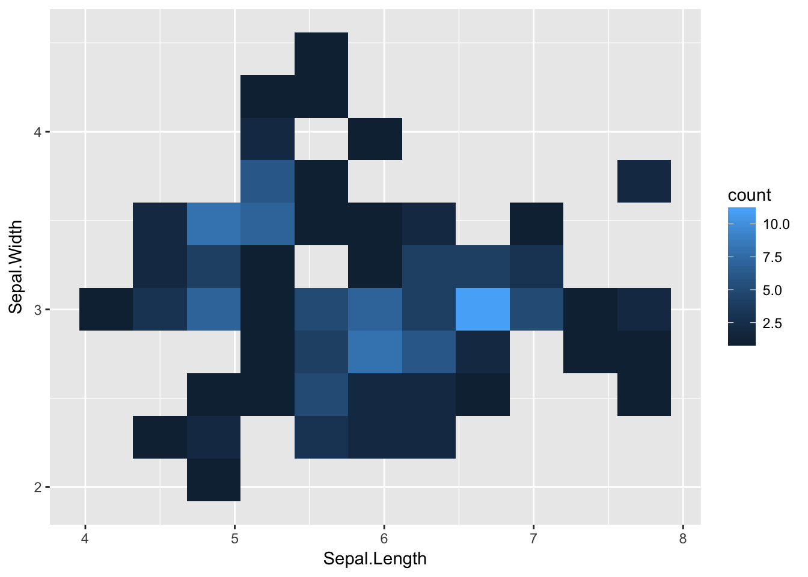
Two qualitatives
ggplot(iris, aes(Sepal.Length.ord)) + geom_bar() + facet_wrap(~ Species)
ggplot(iris, aes(Sepal.Length.ord, fill = Species)) + geom_bar()
ggplot(iris, aes(Sepal.Length.ord, fill = Species)) +
geom_bar(position = "fill") +
scale_y_continuous(labels = percent)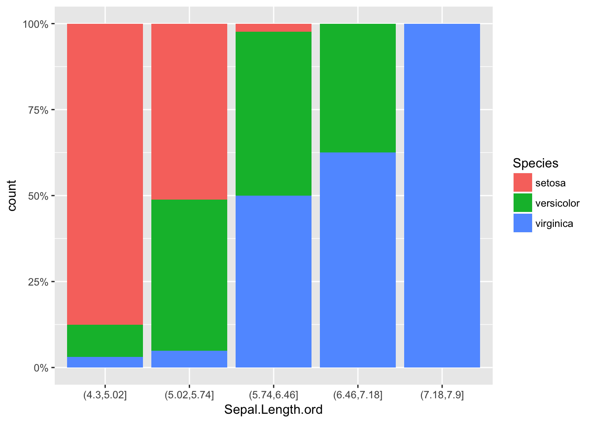
ggplot(iris, aes("", fill = Sepal.Length.ord)) +
geom_bar(aes(y = (..count..)/sum(..count..)), width = 1) +
scale_y_continuous(labels = percent) +
coord_polar(theta = "y") +
facet_wrap(~ Species)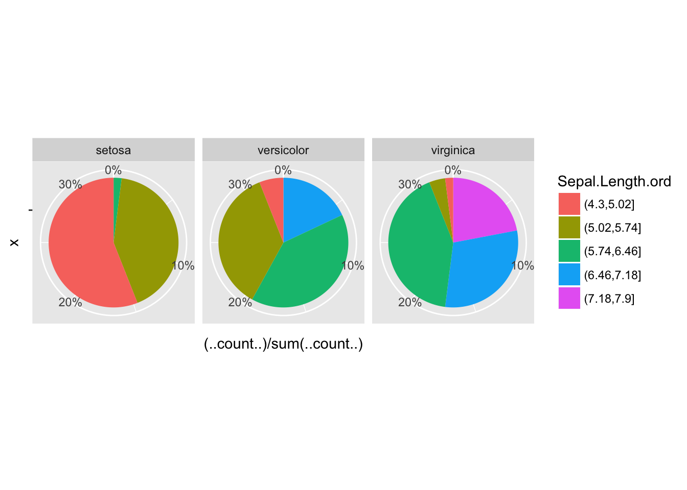
ggplot(iris, aes(Species, Sepal.Length.ord)) + geom_bin2d()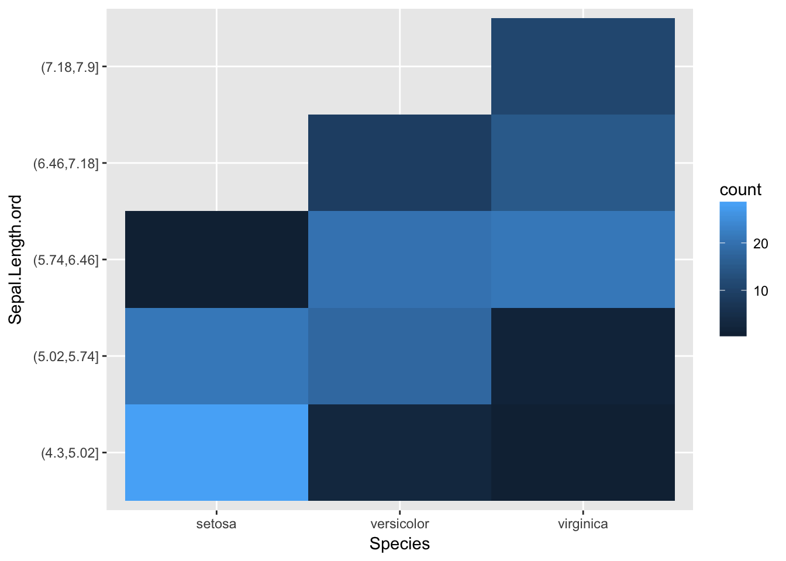
Qualitative vs. Quantitative
ggplot(iris, aes(Sepal.Length)) + geom_histogram() + facet_grid(Species ~.)## `stat_bin()` using `bins = 30`. Pick better value with `binwidth`.
ggplot(iris, aes(Sepal.Length, fill = Species)) +
geom_histogram() + facet_grid(Species ~.)## `stat_bin()` using `bins = 30`. Pick better value with `binwidth`.
ggplot(iris, aes(Sepal.Length, col = Species)) + geom_density()
ggplot(iris, aes(Species, Sepal.Length)) + geom_boxplot()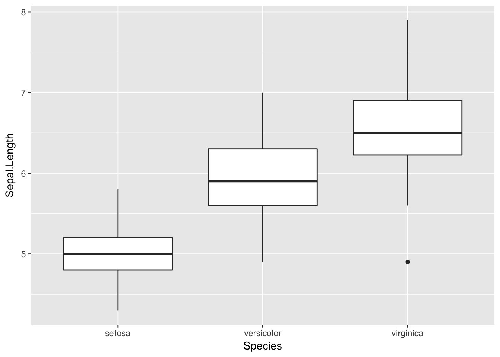
ggplot(iris, aes(Species, Sepal.Length, fill = Species)) + geom_boxplot()
ggplot(iris, aes(Sepal.Length, col = Species)) + stat_ecdf()
Multivariate
Some graphics with more than 2 variables
ggplot(iris, aes(Petal.Length, Petal.Width, col = Species)) +
geom_point()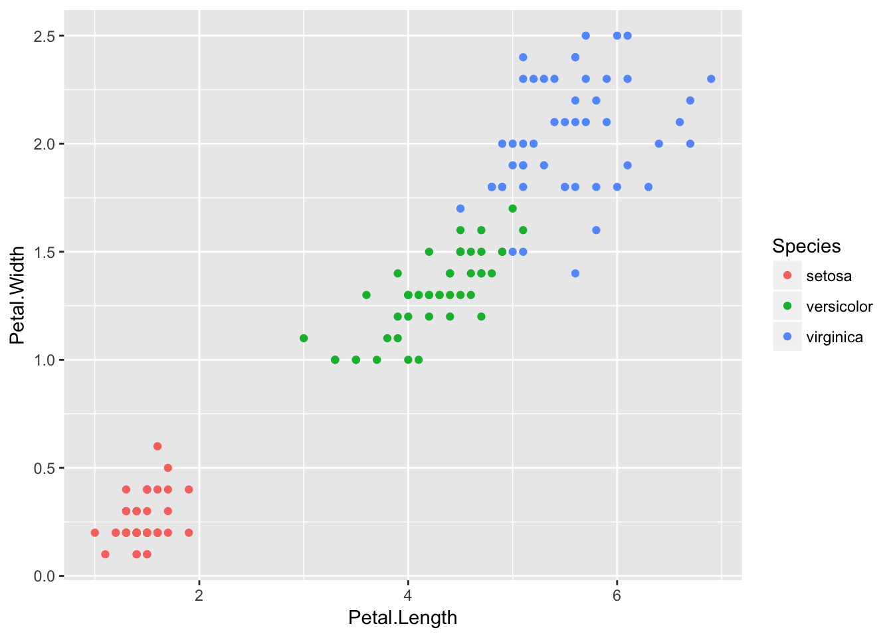
ggplot(iris, aes(Petal.Length, Petal.Width, col = Species)) +
geom_point() + facet_wrap(~ Sepal.Length.ord)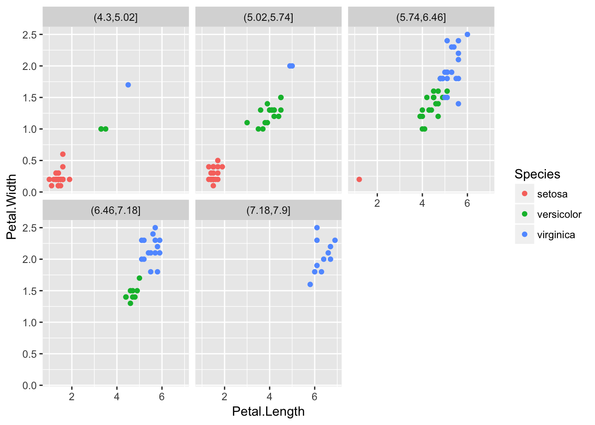
ggplot(iris, aes(Petal.Length, Petal.Width, col = Species)) +
geom_point() + facet_grid(Species ~ Sepal.Length.ord)
library FactoMineR
For data analysis, such as Principle Components Analysis (PCA)
library(FactoMineR)pca = PCA(iris, quali.sup = c(5, 6)) # since we add Sepal.Length.ord to iris data
summary(pca)##
## Call:
## PCA(X = iris, quali.sup = c(5, 6))
##
##
## Eigenvalues
## Dim.1 Dim.2 Dim.3 Dim.4
## Variance 2.918 0.914 0.147 0.021
## % of var. 72.962 22.851 3.669 0.518
## Cumulative % of var. 72.962 95.813 99.482 100.000
##
## Individuals (the 10 first)
## Dist Dim.1 ctr cos2 Dim.2 ctr cos2
## 1 | 2.319 | -2.265 1.172 0.954 | 0.480 0.168 0.043 |
## 2 | 2.202 | -2.081 0.989 0.893 | -0.674 0.331 0.094 |
## 3 | 2.389 | -2.364 1.277 0.979 | -0.342 0.085 0.020 |
## 4 | 2.378 | -2.299 1.208 0.935 | -0.597 0.260 0.063 |
## 5 | 2.476 | -2.390 1.305 0.932 | 0.647 0.305 0.068 |
## 6 | 2.555 | -2.076 0.984 0.660 | 1.489 1.617 0.340 |
## 7 | 2.468 | -2.444 1.364 0.981 | 0.048 0.002 0.000 |
## 8 | 2.246 | -2.233 1.139 0.988 | 0.223 0.036 0.010 |
## 9 | 2.592 | -2.335 1.245 0.812 | -1.115 0.907 0.185 |
## 10 | 2.249 | -2.184 1.090 0.943 | -0.469 0.160 0.043 |
## Dim.3 ctr cos2
## 1 -0.128 0.074 0.003 |
## 2 -0.235 0.250 0.011 |
## 3 0.044 0.009 0.000 |
## 4 0.091 0.038 0.001 |
## 5 0.016 0.001 0.000 |
## 6 0.027 0.003 0.000 |
## 7 0.335 0.511 0.018 |
## 8 -0.089 0.036 0.002 |
## 9 0.145 0.096 0.003 |
## 10 -0.254 0.293 0.013 |
##
## Variables
## Dim.1 ctr cos2 Dim.2 ctr cos2 Dim.3 ctr
## Sepal.Length | 0.890 27.151 0.792 | 0.361 14.244 0.130 | -0.276 51.778
## Sepal.Width | -0.460 7.255 0.212 | 0.883 85.247 0.779 | 0.094 5.972
## Petal.Length | 0.992 33.688 0.983 | 0.023 0.060 0.001 | 0.054 2.020
## Petal.Width | 0.965 31.906 0.931 | 0.064 0.448 0.004 | 0.243 40.230
## cos2
## Sepal.Length 0.076 |
## Sepal.Width 0.009 |
## Petal.Length 0.003 |
## Petal.Width 0.059 |
##
## Supplementary categories
## Dist Dim.1 cos2 v.test Dim.2 cos2 v.test
## setosa | 2.244 | -2.225 0.983 -11.240 | 0.289 0.017 2.608
## versicolor | 0.748 | 0.496 0.441 2.508 | -0.550 0.541 -4.967
## virginica | 1.753 | 1.728 0.971 8.732 | 0.261 0.022 2.359
## (4.3,5.02] | 2.070 | -2.004 0.937 -7.455 | -0.516 0.062 -3.433
## (5.02,5.74] | 0.994 | -0.990 0.992 -4.340 | 0.079 0.006 0.622
## (5.74,6.46] | 0.979 | 0.950 0.942 4.235 | -0.214 0.048 -1.707
## (6.46,7.18] | 1.631 | 1.562 0.917 4.872 | 0.451 0.077 2.514
## (7.18,7.9] | 2.738 | 2.482 0.822 4.990 | 1.040 0.144 3.736
## Dim.3 cos2 v.test
## setosa | -0.043 0.000 -0.965 |
## versicolor | -0.096 0.017 -2.166 |
## virginica | 0.139 0.006 3.131 |
## (4.3,5.02] | 0.056 0.001 0.935 |
## (5.02,5.74] | 0.037 0.001 0.721 |
## (5.74,6.46] | 0.097 0.010 1.925 |
## (6.46,7.18] | -0.082 0.003 -1.136 |
## (7.18,7.9] | -0.493 0.032 -4.421 |dimdesc(pca)## $Dim.1
## $Dim.1$quanti
## correlation p.value
## Petal.Length 0.9915552 3.369916e-133
## Petal.Width 0.9649790 6.609632e-88
## Sepal.Length 0.8901688 2.190813e-52
## Sepal.Width -0.4601427 3.139724e-09
##
## $Dim.1$quali
## R2 p.value
## Species 0.9346162 8.650956e-88
## Sepal.Length.ord 0.7605984 5.445095e-44
##
## $Dim.1$category
## Estimate p.value
## virginica 1.7283051 8.295665e-25
## (7.18,7.9] 2.0821611 2.066701e-07
## (6.46,7.18] 1.1621035 4.207377e-07
## (5.74,6.46] 0.5501108 1.367268e-05
## versicolor 0.4964480 1.164951e-02
## (5.02,5.74] -1.3905151 8.028009e-06
## (4.3,5.02] -2.4038602 1.051683e-16
## setosa -2.2247532 2.073453e-62
##
##
## $Dim.2
## $Dim.2$quanti
## correlation p.value
## Sepal.Width 0.8827163 2.123801e-50
## Sepal.Length 0.3608299 5.731933e-06
##
## $Dim.2$quali
## R2 p.value
## Sepal.Length.ord 0.2006322 1.382761e-06
## Species 0.1657182 1.646217e-06
##
## $Dim.2$category
## Estimate p.value
## (7.18,7.9] 0.8721703 1.395107e-04
## setosa 0.2889275 8.646553e-03
## (6.46,7.18] 0.2831920 1.144684e-02
## virginica 0.2612430 1.783576e-02
## (4.3,5.02] -0.6843715 4.893669e-04
## versicolor -0.5501705 2.374413e-07
##
##
## $Dim.3
## $Dim.3$quanti
## correlation p.value
## Petal.Width 0.2429827 0.0027349555
## Sepal.Length -0.2756577 0.0006395628
##
## $Dim.3$quali
## R2 p.value
## Sepal.Length.ord 0.15386335 6.671063e-05
## Species 0.06902197 5.212527e-03
##
## $Dim.3$category
## Estimate p.value
## virginica 0.13896861 1.532356e-03
## versicolor -0.09612951 2.983835e-02
## (7.18,7.9] -0.41623009 5.267240e-06pca$eig## eigenvalue percentage of variance cumulative percentage of variance
## comp 1 2.91849782 72.9624454 72.96245
## comp 2 0.91403047 22.8507618 95.81321
## comp 3 0.14675688 3.6689219 99.48213
## comp 4 0.02071484 0.5178709 100.00000plot(pca$eig[,3], type = "b")
eig = data.frame(comp = rownames(pca$eig),
setNames(pca$eig, c("eigenvalue", "percent", "cum.percent")))
ggplot(eig) +
geom_bar(aes(comp, percent), stat = "identity") +
stat_summary(aes(comp, cum.percent, group = 1),
fun.y = sum, geom = "line")
plotellipses(pca)
plot(pca, choix = "ind", habillage = 5, invisible = "quali", label = "none")
ggplot(cbind(iris, pca$ind$coord), aes(Dim.1, Dim.2, col = Species)) +
geom_point() +
stat_ellipse()Some work
Download the two following files :
Data description can be found here: each line represent a draw of a digit between 0 and 9, with 8 points (\((x,y)\) coordinates for each point) and the number drawn.
- Import the two files, and group them into one
data.framedata.framedimensions: 10992 rows and 17 columns- column names: X1, Y1, X2, Y2, X3, Y3, X4, Y4, X5, Y5, X6, Y6, X7, Y7, X8, Y8, digit
- Describe (quickly) all attributes
- one by one first
- coordinates with respect to
digit
- Represent the first
"0"drawn as following 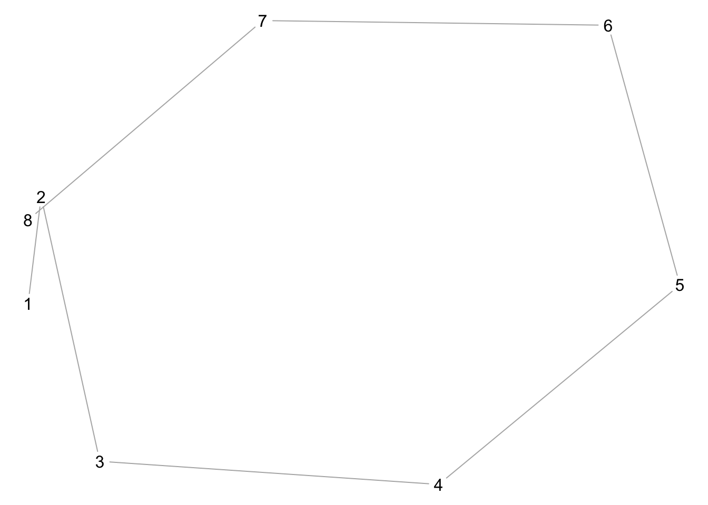 - Use the preceding code to create a function, with
- Parameters:
- a vector with the 16 values of each point (if it is a
data.frame, transform it as simple vector) - a numeric value (with
NULLvalue by default), denoting the number to drawn (possibly not pass) - a boolean vector (with
FALSEvalue by default), indicating if the point number has to be added to the graph - a boolean vector (with
FALSEvalue by default), indicating if the plot is to added to the previous one - a specific color (with
"black"value by default)
- a vector with the 16 values of each point (if it is a
- Output:
- line representing the drawn
- number drawn as title (if known)
- point number (if wanted)
 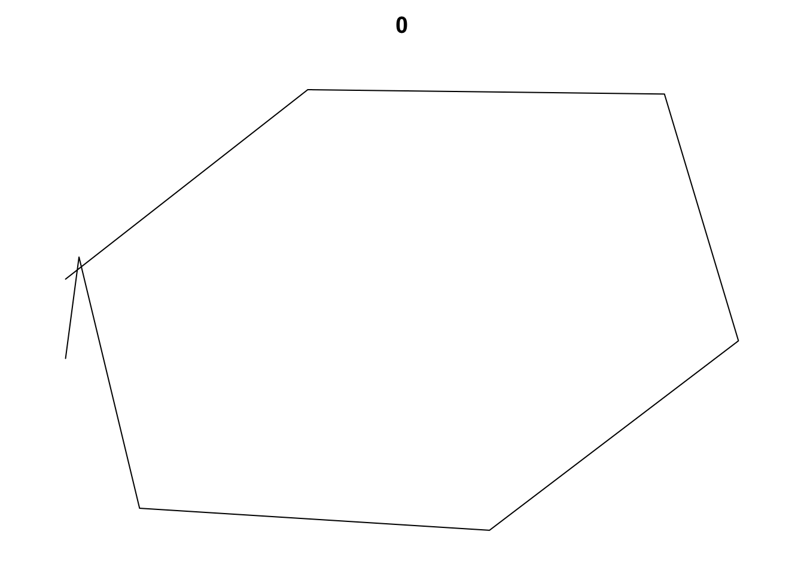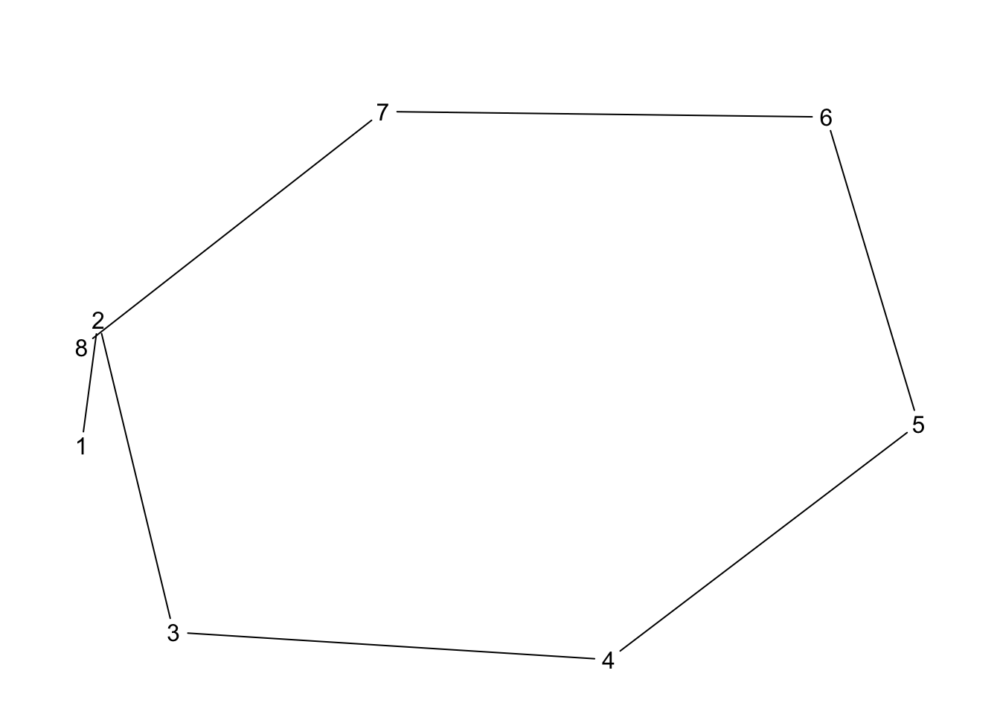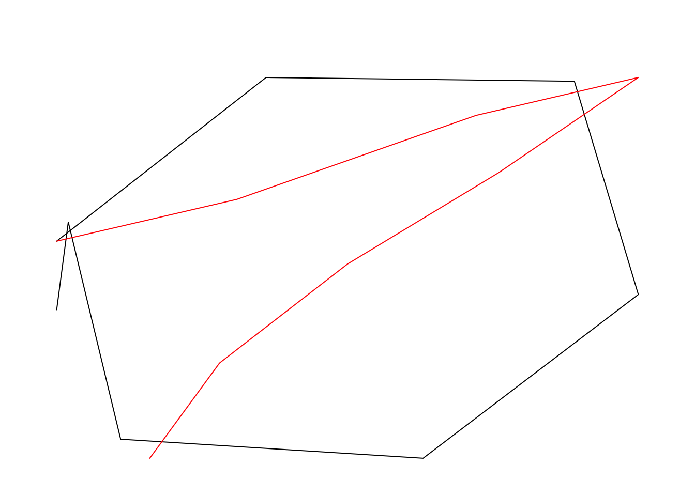
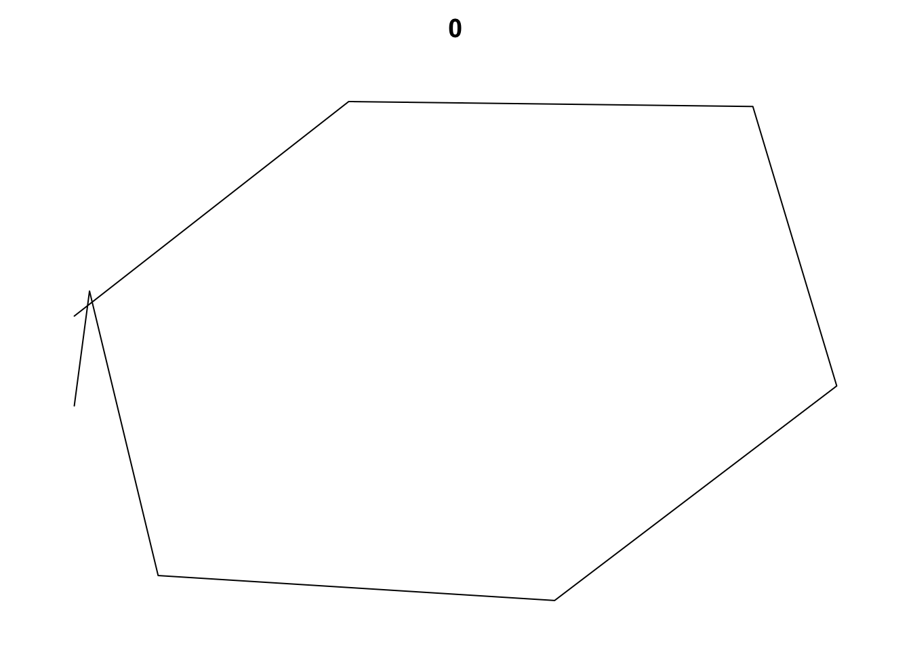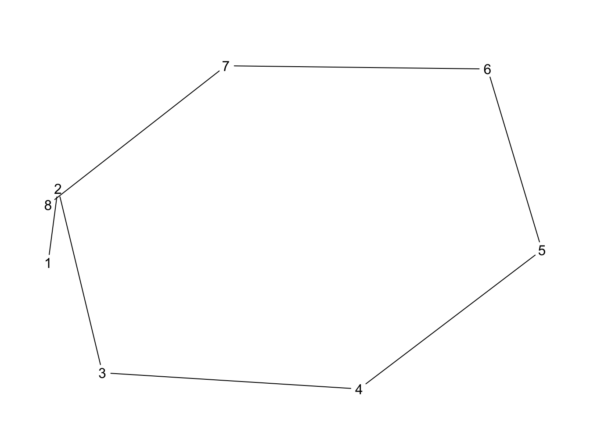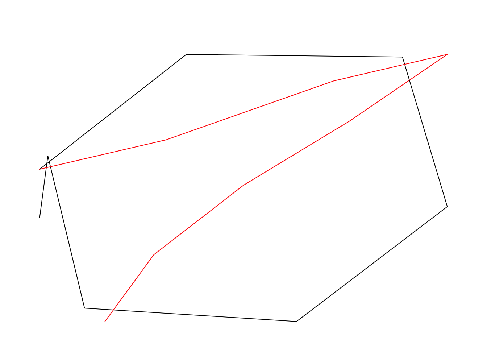
- Parameters:
- Use the function to represent, in one graph, each first drawn for each number 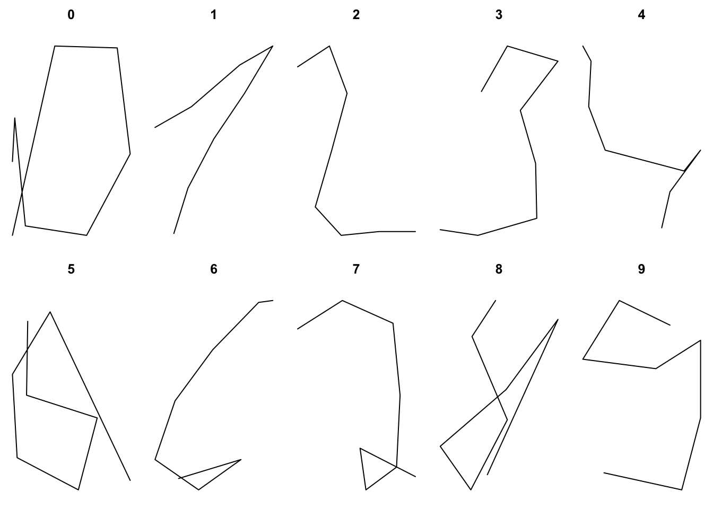
- Compute the mean drawn for each number and represent it, with each drawn in (very) light gray 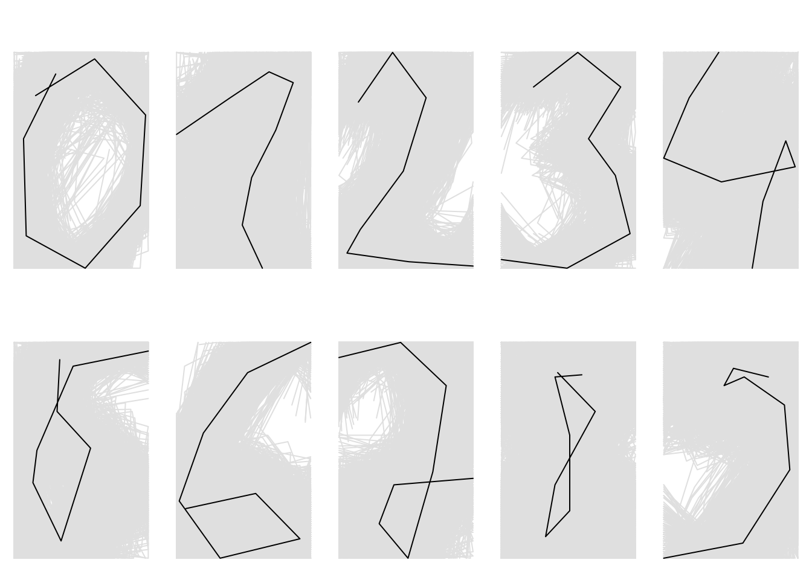
- Perform a PCA on the data, and represent the first plan, with a specific color for each number


- Represent each number projections on a specific plot


We conclude here that we surely need to clusters data separatly for each digit, to detect if there really are different ways to write a digit (and how).